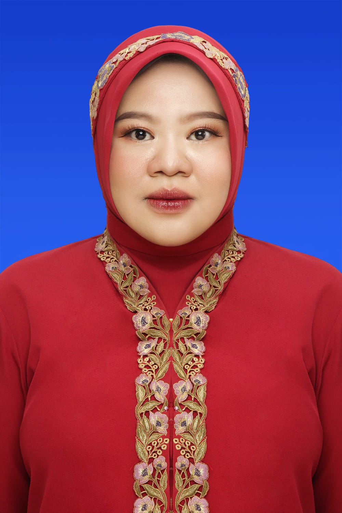
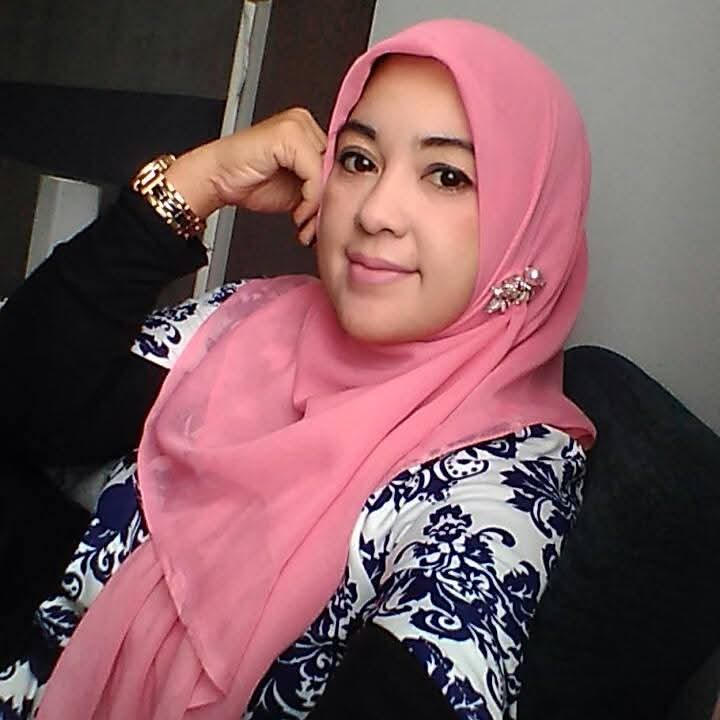
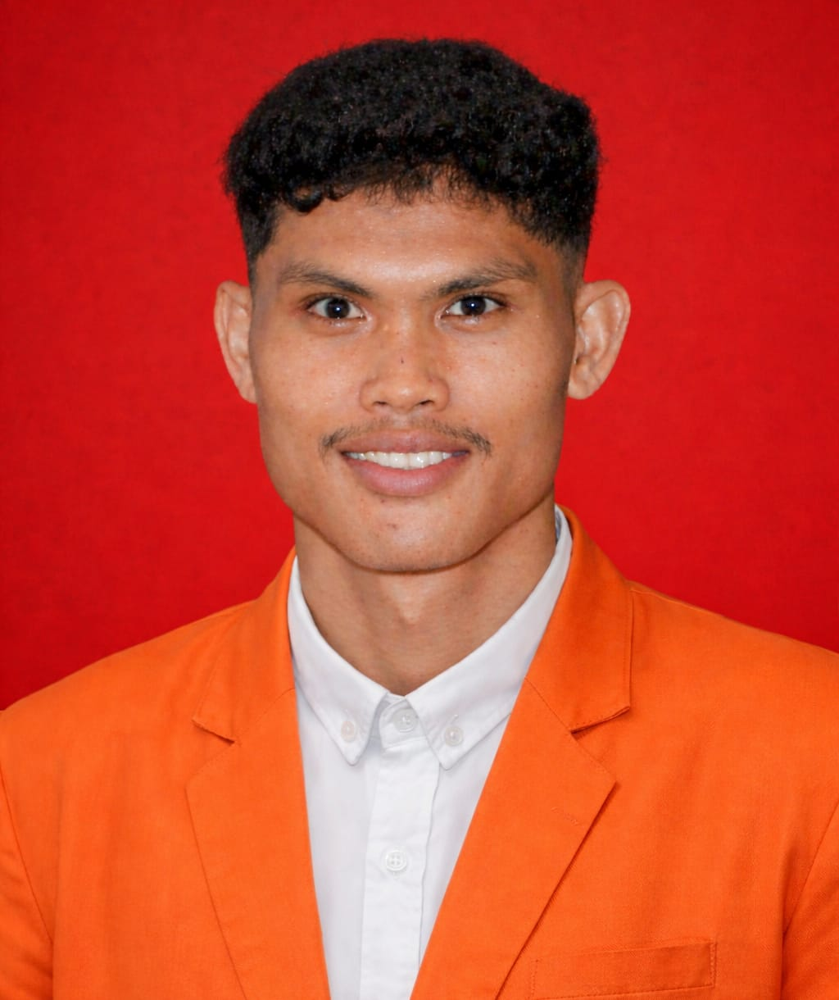
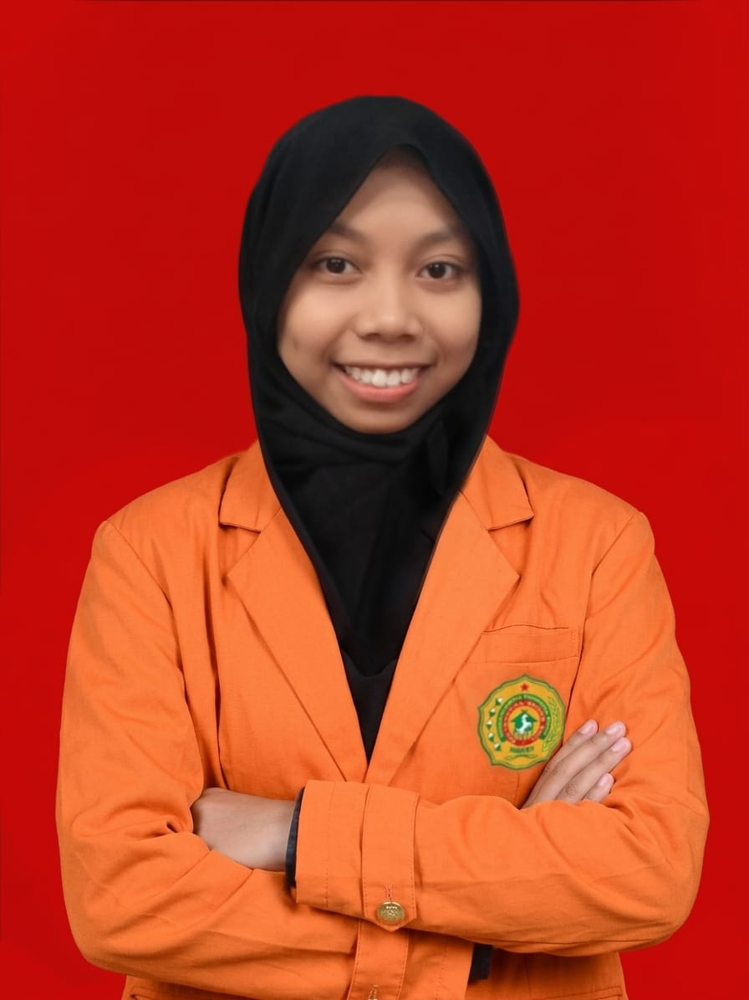
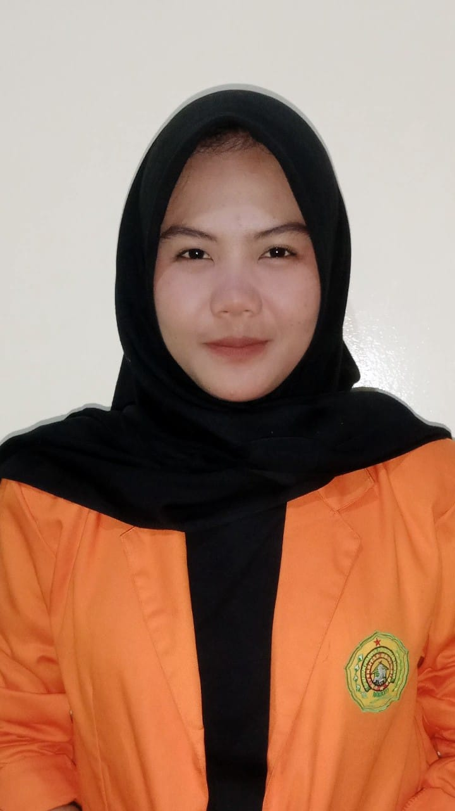
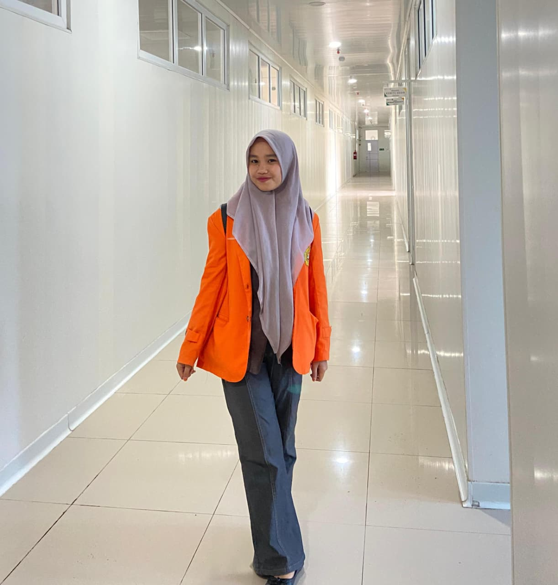

Dashboard Profil
Kenali tim konsultan dan pembuat MentalHealth

Afrina Maulida, M.Si
Konsultan Kesehatan Mental- Psikologi Sains, Universitas Muhammadiyah Malang
- Lidaafrina222@gmail.com

Lies Imma J., M.Si
Konsultan Kesehatan Mental- Psikologi Sains, Universitas Muhammadiyah Malang
- Liezimma294@gmail.com

Fadilan
NIM: 2403002
Program Studi Administrasi Kesehatan
Faisal Adi Pradana
NIM: 2304010
Program Studi Sistem dan Teknologi Informasi

Nur Suci Ramadani
NIM: 2304029
Program Studi Sistem dan Teknologi Informasi

Nadya Arika
NIM: 2503011
Program Studi Administrasi Kesehatan

Nuristiana
NIM: 2403086
Program Studi Administrasi Kesehatan